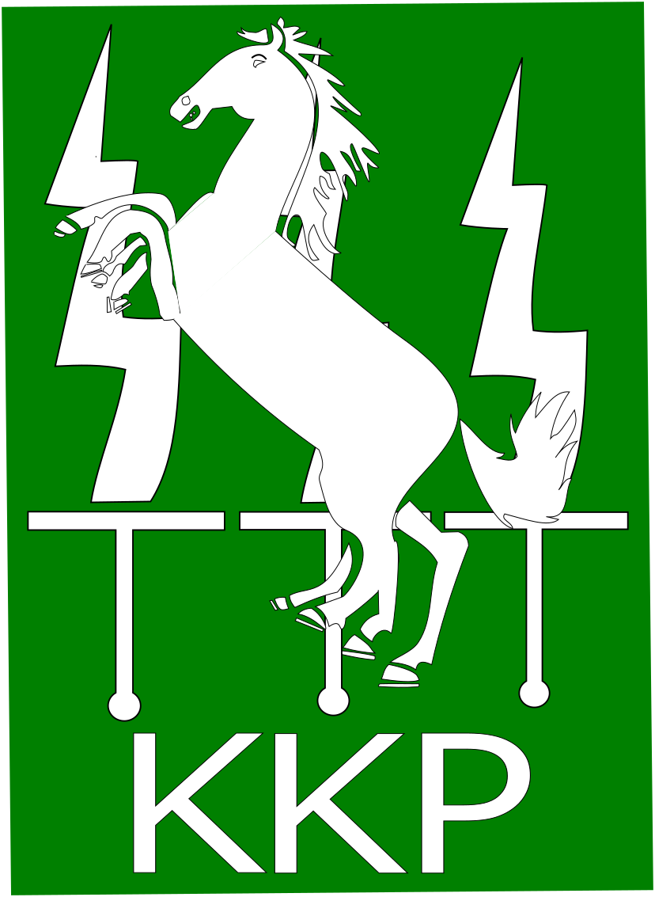

Prosjekt 2
Mitt andre prosjekt går ut på design for digital Fabrikasjon.
Jeg har laget to prosjekter for denne oppgaven. Ett i fusion 360 og ett i inkscape.
Mobildeksel i fusion360
For mitt prosjekt i fusion360 så har jeg bestemt meg for å lage ett telefondeksel. Jeg lagde telefondekselet tilpasset min telefon (iphone x). Det er av et gjennomsiktig matriale, med logo på baksiden og hull som viser apple logoen. Se bilder under.


For mer detaljer, se fusion360 filen: Mitt mobildeksel.
KKP logo i inkscape
For mitt prosjekt i inkscape har jeg valgt å lage logen til kompaniet mitt fra forsvaret. Kommandoplasskompaniet i sambandsbataljonen. Logoen ble som på bildet under:
Se inkscapefilen for å se den i inkscape: KKP logo.svg